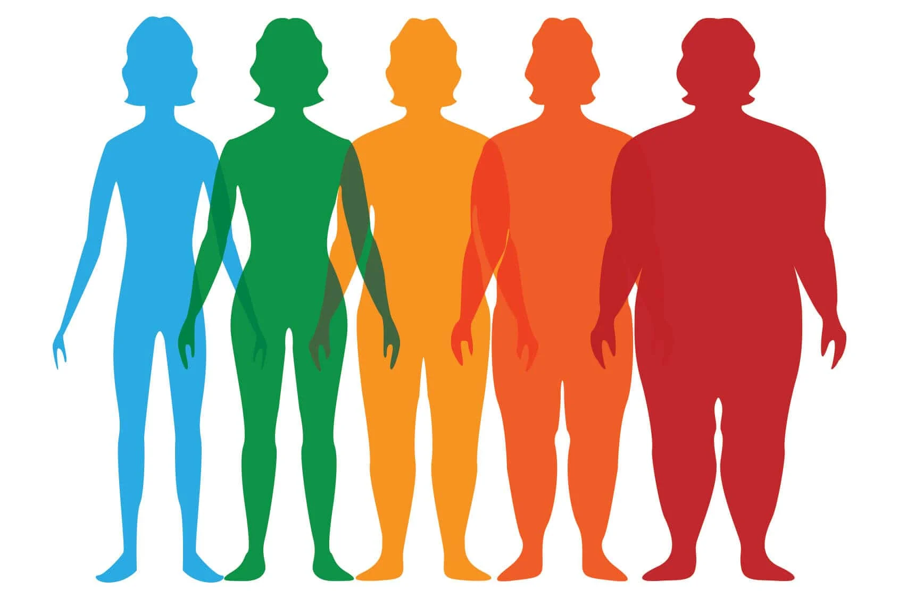
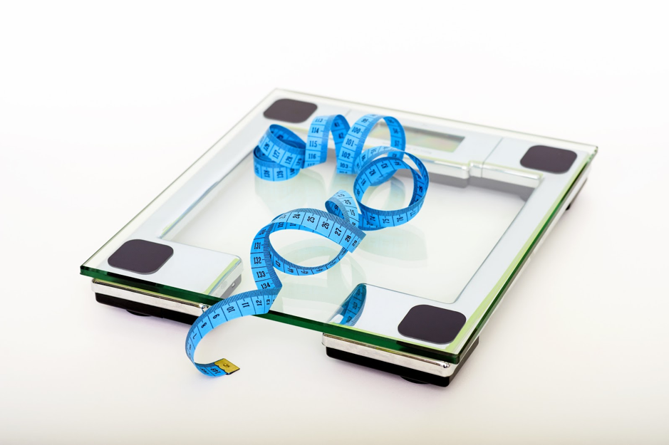

Aqui, podes encontrar diversos exercícios para trabalhar cada parte do corpo, melhorar a tua flexibilidade, resistência e força. Explora exercícios para fortalecer os músculos, melhorar a postura e aprender como executá-los corretamente. Não importa o teu objetivo, há sempre um exercício perfeito para ti!

Nesta área, poderás calcular o teu Índice de Massa Corporal (IMC) de forma simples e rápida. O IMC é uma ferramenta importante para avaliar se o teu peso está dentro da faixa saudável para a tua altura. Após inserir o teu peso e altura, poderás ver o valor do teu IMC e obter uma interpretação sobre o teu estado atual.

Nesta seção, tens a possibilidade de atualizar as tuas informações pessoais sempre que necessário. Se desejares alterar a tua password, atualizar os teus dados de altura ou ajustar as informações sobre o teu peso, basta preencheres os campos correspondentes. Mantém as tuas informações sempre atualizadas.